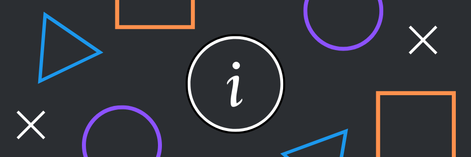
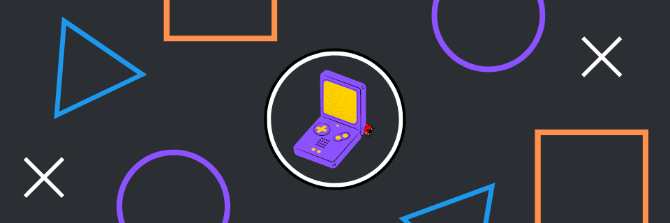
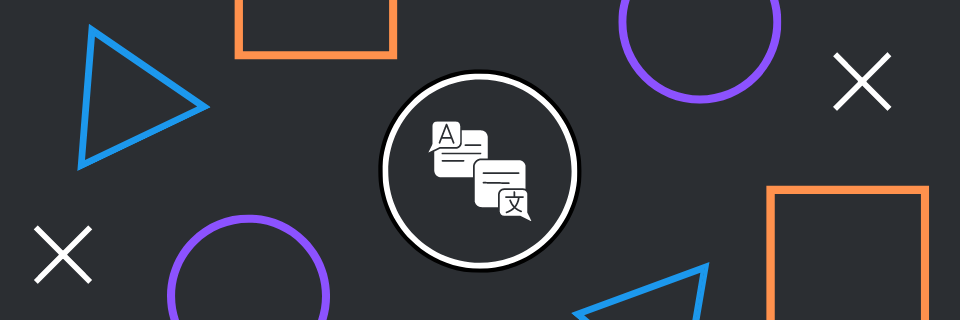

About

Hello, welcome.
My name is Engin, a 21 Years old someone who enjoys playing almost any type of games. I'm currently living in Turkey and I don't have VISA so... some jobs might not for me.
I have experiences using; Jira, Trello, Unity, UE4, Office Programs(Such as; Word, Excel, Powerpoint, Sharepoint)
QA Game Tester

Finding bugs in games are fun but they also have to be reported and that's what I do.
Ever since I know myself, I was hunting for bugs and using them for fun.
I guess my love with bugs started with CS 1.5 when I was around 8-9, I always loved going top of the maps and trick players back then.
I've been reporting bugs for more then 4+ years. I've mostly participated in various Closed Alpha/Beta Tests to see how things operate and begun finding bugs & reporting them.
Localization

I love localizing games and programs. Translating things are easy but It can also be a time consuming job, depends on the project. But, I don't mind at all.
My first step in this section was using some game's mod .json file to translate them to Turkish. I've contributed to some programs and games while improving myself for a job on a platform called Crowdin. Well, It helped me about how to localize by using other formats as well.
I also translated some mangas. But not for long, the website got shutdown after I translated some chapters.
For more informations about my localizations, I recommend you to check my Roblox DevForum account. I wrote a lot things in there about my English and projects that I've worked on as well.
My crowdin account
Contact
In order to contact me fast, I suggest you to use my discord. I'm mostly online in there and I can quickly answer as soon as I see. You can also use other options but It's definitely going to take more time because I don't usually online at other platforms.
My Discord account is: @xainly.
Don't hesitate to add me up!
Elements
Text
This is bold and this is strong. This is italic and this is emphasized.
This is superscript text and this is subscript text.
This is underlined and this is code: for (;;) { ... }. Finally, this is a link.
Heading Level 2
Heading Level 3
Heading Level 4
Heading Level 5
Heading Level 6
i = 0;
while (!deck.isInOrder()) {
print 'Iteration ' + i;
deck.shuffle();
i++;
}
print 'It took ' + i + ' iterations to sort the deck.';